Adding Game Support
Provided for educational purposes. Legality of decompilation may vary worldwide.
Shows you how to add support for additional games that are not already supported.
Small amount of Programming experience required.
For people unfamiliar with reverse engineering, this guide tries to be as beginner friendly as possible.
Once you're familiar with the process, adding support for a new game takes ~30 minutes.
About
The implementation of CriFsV2Hook is specifically crafted to make use of as much 'public' APIs as possible; and avoid internals.
The existing logic should work with any game out of the box. However, it is possible that due to the library & compiler combination used in a game, the mod might not be able to find the relevant functions to hook.
CriFsV2Hook relies on Signature Scanning to find the relevant CRI functions.
What you will be doing.
We will be inserting function signatures to CpkBinderPointers.cs
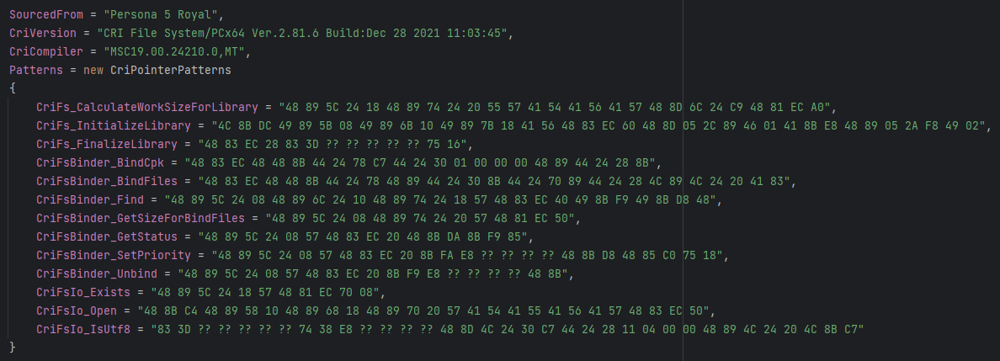
For this guide, I will demonstrate step by step process by adding support for a game and walking through what I did.
Update the C# Project
To get started, add your game to Reloaded-II, and edit this mod's ModConfig.json file to auto enable support for this game:
"SupportedAppId": [
"p4g.exe",
"p5r.exe",
"p3p.exe",
"p3p_sln_dt_m.exe",
"sonic forces.exe",
"opu3.exe",
"slw.exe",
"sonicgenerations.exe",
]
Add your game's Reloaded AppId to this list. This is usually the name of the .exe file in lowercase; otherwise
check Apps folder in Reloaded folder.
Once you are done, build the C# project.
In my case, I will add yakuzakiwami.exe.
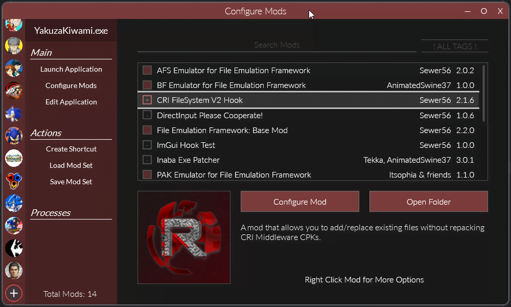
Once built, the mod should show in your mods list for the given game.
Test The Mod
Test the mod to see how much works out of the box.
When you boot the game up with Reloaded, CriFsV2Hook will print out a log, showing the closest matching game.
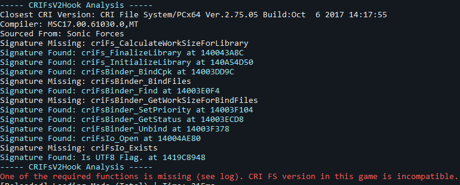
If you are lucky, the mod might work out the box; if you're not; proceed and implement it with me.
Copy the Closest Game's Config
Copy the config from the closest matching game, in this game I copied from Sonic Forces.
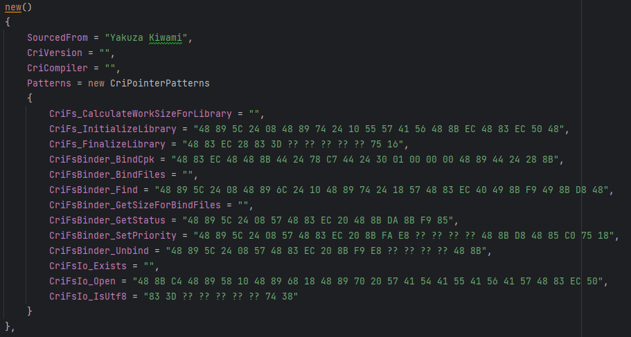
Blank out any signatures that were not found, as well as the compiler and CRI version.
Verify whether the signatures are correct (using information later in this guide).
Setup Decompiler
IDA Pro is recommended, because of the Lumen public Lumina server.
Lumen is a database of function signatures, all 3000+ CRI function signatures I made, including those used by the mod are uploaded there.
When using Lumen you should usually find a couple of hundred CRI functions automatically labeled for you out of the box for free.
- First please set up Lumen.
- And install SigMakerEx plugin.
- Then, open your Disassembly in IDA.
Press Lumina -> Pull All Metadata.
Games with a lot of code [especially Denuvo Titles] can take a while to pull from Lumen when you hit Pull All Metadata. It can even take 5 minutes, please be patient; the process is not 'stuck'.
If you don't have an existing disassembly, simply disassemble a new file with IDA and wait for analysis to finish.
Denuvo DRM
Denuvo titles can have some nastiness which is very modding unfriendly.
Consider refusing to buy any game which uses this kind of DRM and encourage your friends to do the same, too. (Also applies to: Microsoft Store DRM, Arxan, VMProtect, etc.)
Unfortunately, as an anti-temper tech, Denuvo is by design engineered to make modding a painful experience.
The Denuvo experience includes:
- 30+ hours of waiting for analysis to complete. (Without Denuvo: 2-10 minutes)
- Renaming EXE segments to try break decompilers [in more recent versions].
In any case; here are some tips for dealing with Denuvo binaries.
Force Load All Segments
Modify the following setting (in ida/cfg/pe.cfg).
// Always load all sections of a PE file?
// If no, sections like .reloc and .rsrc are skipped
PE_LOAD_ALL_SECTIONS = YES
Without this setting, there's a good chance a chunk of your disassembly may appear 'wrecked' full of invalid references to variables.
Skip Disassembling Obfuscated Game Code
Around 70-90% of every Denuvo EXE is comprised of extreme obfuscation using virtual machines with randomised instruction sets.
There's usually around 40-100 'hook-in' points which redirect game code to these virtual machines; obfuscating and holding the original game code hostage.
That said, it is statistically very unlikely any CRI code will be held hostage, so it's wasteful to disassemble this.
Observe the 'segments' view in your disassembler:
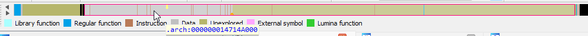
The obfuscated, encrypted virtual machine stuff is usually the largest segment in the EXE, and towards the back of it.
If you go to View -> Open Subviews -> Segments, you can delete this segment and analysis should complete in a more reasonable amount
of time that's not 30+ hours. When deleting select both checkboxes (Confirm Deletion AND Disable Addresses).
Denuvo is actually friendlier than DRMs of the past here; which would obfuscate code all over the place. Denuvo leaves most of the original code intact. 👍
Steam Embedded DRM
If you run a game via Reloaded; it will log to console if Steam DRM is present.
If a game has Steam Embedded DRM (which encrypts game code); you will usually find your disassembler will report a low number of functions (< 200).
In those cases, verify Steam DRM is present via booting in Reloaded, or via the View -> Open Subviews -> Segments window.
If you see a section in there which is named .bind, Steam DRM is present.
Remove this DRM with Steamless, and throw the new EXE into your decompiler.
Finding Functions
Provides guidance on how to quickly find functions.
CRI has a lot of very helpful error logging; we will be taking advantage of this.
Now we will hunt for the missing functions; the general procedure is as follows:
- Find the Function.
- Create a function signature (Edit -> Plugins -> SigMakerEx -> OK (Create Signature for Function))
- Copy signature from Output window to source code.
In some rare cases, Lumen signatures might find the function, but our signatures didn't; try searching name in 'functions' window first.
Doublecheck (using the info below) that your existing signatures taken from other games are correct.
Getting CRI Version
Open the Strings window (View -> Open Subviews -> Strings), filter for string CRI File System/ and doubleclick the result.
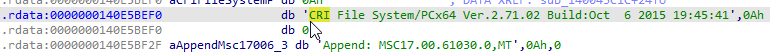
Copy the CRI version and compiler info into the source code:
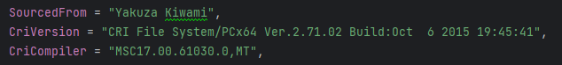
CriFs_InitializeLibrary
This acts as a general tutorial of what to do later; after this, you're left on your own.
Select the variable that contains the version string, right click it and hit Jump to xref to Operand (hotkey: x).
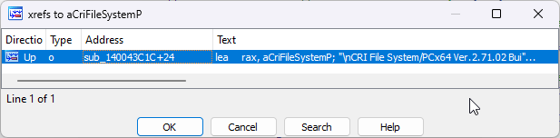
Press F5 ('Generate Pseudocode'), and drag out the tab with the C code; docking it to the right, your window should now look like this:
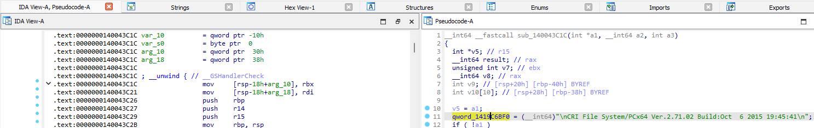
Now sync the pseudocode window with main view by right clicking:
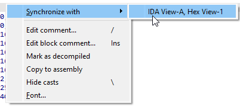
This function you see is criFs_InitializeLibrary, to rename it, click on function name, and press N, then rename it to criFs_InitializeLibrary.
Then, to get the signature, move the cursor to the start of the function and open SigMakerEx (Edit -> Plugins -> SigMakerEx).
Create a signature for a function, and copy it from the Output Window in IDA.
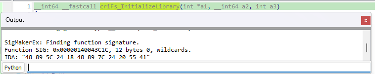
And into the source code:
CriFs_InitializeLibrary = "48 89 5C 24 18 48 89 7C 24 20 55 41",
You're on your own from now 😉.
CriFs_CalculateWorkSizeForLibrary
This function is called to get amount of memory to allocate before it is passed to criFs_InitializeLibrary.
To find this function, search for error string E2009070701 and find the method that uses it.
That method is criFs_CalculateWorkSizeForLibrary.
CriFs_FinalizeLibrary
Search for method which uses error string E2008072816.
CriFsBinder_BindCpk
Search for method which uses error string E2008071620. This method is criFsBinder_BindCpkSub.
The method which calls this method is criFsBinder_BindCpk.
CriFsBinder_BindFile & CriFsBinder_BindFiles
Search for method which uses error string E2008071630. This is criFsBinder_bindFilesSub.
The method which passes a constant -1 to criFsBinder_bindFilesSub is criFsBinder_BindFiles,
the other method that passes constant 1 is criFsBinder_BindFile.
Sometimes either BindFile or BindFiles may not exist. When only BindFile is present, CriFsV2Hook will try to patch that function to allow binding of multiple files.
That patching happens in CpkBinder.cs
CriFsBinder_Find
Search for method which uses error string W2008121610. This is crifsbinder_checkBoss.
Then check out the 4-8 methods which call said method.
One of them will be find, which looks like this:
// Usually looks like this
__int64 __fastcall criFsBinder_Find(int a1, __int64 a2, void **a3, _DWORD *a4)
{
__int64 result; // rax
if ( a4 )
*a4 = 0;
if ( a3 )
memset(a3, 0, 0x30ui64);
if ( (unsigned int)crifsbinder_checkBoss() )
return 0xFFFFFFFFi64;
result = sub_1400411F4(a1, 0, 0i64, (__int64)a4);
if ( a3 )
{
if ( *a3 == &unk_1419C6A68 )
*a3 = 0i64;
}
return result;
}
In older versions of CRI, it might look more like this:
int __cdecl criFsBinder_Find(int a1, __int16 a2, void *a3, _DWORD *a4)
{
if ( a4 )
*a4 = 0;
if ( a3 )
sub_4490D0(a3);
if ( sub_448F3B() )
return -1;
else
return sub_44A771(a2, (int)a3, 0, 0);
}
DO NOT confuse this with FindById
__int64 __fastcall criFsBinder_FindById(int a1, int a2, void *a3, _DWORD *a4)
{
int v5; // ebx
v5 = (int)a3;
if ( a4 )
*a4 = 0;
if ( a2 < 0 )
{
criErr_NotifyGeneric(0i64, "E2014012701", 4294967294i64);
return 0xFFFFFFFFi64;
}
if ( a3 )
memset(a3, 0, 0x30ui64);
if ( (unsigned int)crifsbinder_checkBoss() )
return 0xFFFFFFFFi64;
return sub_140040E44(a1, a2, v5, 0, 0i64, (__int64)a4, 0i64);
}
If you see E2014012701, you found FindById.
Out of all the methods that call crifsbinder_checkBoss, criFsBinder_Find should be the only one that does not call
criErr_NotifyGeneric.
CriFsBinder_GetWorkSizeForBindFiles
Search for method which uses error string E2008082901, this is criFsBinder_GetWorkSizeForBindFiles.
CriFsBinder_GetStatus
Search for method which uses error string E2012082901, this is criFsBinder_GetStatus.
This error was added in 2012.
For games older than 2012, finding this function can be a bit harder; since this is called often from various contexts and has no strings attached.
The code you want looks something like this:
int __cdecl criFsBinder_GetStatus(int a1, _DWORD *a2)
{
int v3; // eax
if ( sub_7D17D0() )
{
sub_7D32B2(a1);
if ( a2 )
{
v3 = sub_7D17D0();
if ( v3 )
*a2 = *(_DWORD *)(v3 + 32);
else
*a2 = 4;
return 0;
}
else
{
return -2;
}
}
else
{
if ( a2 )
*a2 = 2 * (a1 == 0) + 4;
return -2;
}
}
The interesting/'dead giveaway part' is the following:
v3 = sub_7D17D0();
if ( v3 )
*a2 = *(_DWORD *)(v3 + 32);
else
*a2 = 4;
return 0;
A semi-reliable way to find this function is the following:
- Find function with string E2008071610. This is criFsBinder_Destroy.
- Sort the functions window by address.
- Check functions 1 by 1, by address, ascending.
You should find it within the next ~40 functions. Usually within 10.
The reason we choose criFsBinder_Destroy as a reference specifically is because the CRI source must have been reorganised, but
in every known CRI version, criFsBinder_Destroy and criFsBinder_GetStatus are in the same .obj file, and thus are in proximity
of each other.
CriFsBinder_SetPriority
This method is not present in some games, due to dead code elimination.
If it does not exist, leave the signature empty. Chances are CriFsV2Hook will still work.
Search for method which uses error string E2008072390, this is criFsBinder_SetPriority.
CriFsBinder_Unbind
Search for method which uses error string E2008122691, this is criFsBinder_Unbind.
CriFsLoader_RegisterFile
This is the internal method, not the public API method that varies in case.
Search for method which uses error string W2008082701. This is crifsloader_register_file.
CriFsIo_Open (Windows)
Search for method which uses error string W2007060101, this is criFsIoWin_Open.
CriFsIo_Exists (Windows)
Search for method which uses error string
- E2008081901 (pre 2015 titles)
OR
- E2015091137 (post 2015 titles)
This is criFsIoWin_Exists.
CriFsIo_IsUtf8 (Windows)
This is a signature which points to an if statement (cmp instruction) inside CriFsIo_Exists. Specifically this code.
if (isUtf8)
{
v4 = strlen(lpMultiByteStr);
MultiByteToWideChar(0xFDE9u, 0, lpMultiByteStr, v4 + 1, WideCharStr, 521);
FileAttributesW = GetFileAttributesW(WideCharStr);
}
else
{
FileAttributesW = GetFileAttributesA(lpMultiByteStr);
}
We extract the int32 boolean from here.
You are done. Go test :p.
DisableFileBindWarning
Only implemented for x64 games, if you run into an x86 game with this, contribute to the project.
Some games might report The contents file not found in the binderhn to console in later CRI SDKs.
This signature points to the conditional jmp instruction to disable this printout.
When You're Done
For debugging purposes, feel free to use the toggles inside CriFsV2Hook's mod configuration.
Be a good citizen and upload your renamed CRI functions to Lumen, (Lumina -> Push All Metadata).
Lumen signatures cannot be renamed once uploaded, please only upload after you get all of your function names correct.